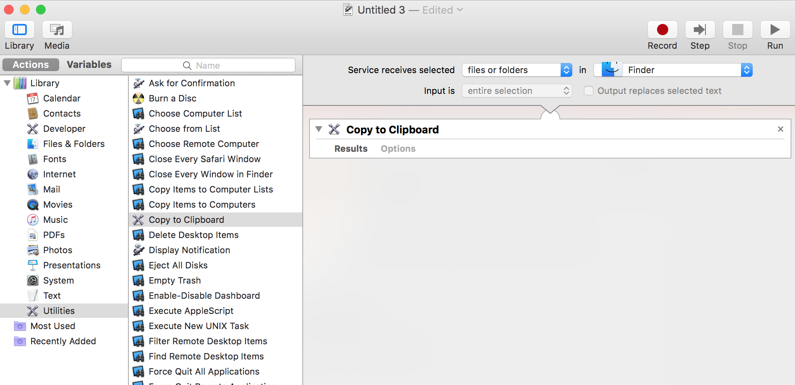

RADseq genomics in R
computer setup
2021-12-18
Source:vignettes/rad_genomics_computer_setup.Rmd
rad_genomics_computer_setup.RmdTime to allow: ETA ~20 min
This vignette purposes is to show users how to setup their computers for RADseq genomic analysis inside R. It targets users of my packages or workshops.
The vignette as an Installation problems section, browse through it if your experiencing installation issues.
The vignette is also usefull if your:
- conducting imputations
- using simulations with
grurand it’s dependencies or simulations withstrataG. - specific installation instructions for:
rmetasimXGBoostLightGBMrandomForestSRCrangermissRangerpcaMethods- how to OpenMP enabled specific packages that require to run in parallel for the imputations.
I’m currently merging information also found in this tutorial
macOS
Warning: package management software Homebrew and/or MacPorts : My experience with these packages is that at some point they will be unreliable with genomic software installation. It might do the trick for some software, but eventually you will loose a lot of time trying to figure out what’s your problem.
Update your OS
- the current version is macOS Catalina 10.15
- how to update
Get administrator and root user access
Make sure you have administrator and root user access to your computer how.
Apple’s Command Line Tools
Make sure it’s installed…if not, follow instructions. Although the prompt message may be a bit confusing, just click install.
xcode-select --installIn the finder using keyboard shorcut cmd+shift+g go to: /Library/Developer/CommandLineTools/Packages/ and double click on macOS_SDK_headers_for_macOS_10.14.pkg to install.
Notes:
- If command line tools is already installed you’ll get this message
xcode-select: error: command line tools are already installed, use "Software Update" to install updates - to test if you have a compiler, you can also type:
makein the terminal -
./configure: configure everything before installation -
make: connect libraries and the source before make install (doc) -
make install: use to build (compile) source code to create binary files and install the application on our system as configured using./configure, usually in/usr/local/bin. - Reading: to understand the basic steps to install software with the terminal (configure, make and sudo make install steps)
- for more curl option type
curl -h
Compiler
Apple can’t ship GNU Compiler Collection (GCC) with OpenMP enabled, similar story with Clang the other compiler used in macOS. Consequently, both need to be updateed manually if you want to run software that ues parallel computing (like stacks).
The command below fro both GCC and Clang will:
- change directory to your downloads
- download the compiler’s binaries
- uncompress and move folders (
bin,include,lib,libexecandshare) of the compiler on your computer/usr/localdirectory. - remove the downloaded file
- check the version of gcc
Update GCC
Choose the binary version number based on your OS and change the version accordingly link.
Catalina gcc-9.2-bin.tar.gz Mojave gcc-8.3.tar.gz
#In Terminal
cd Downloads
sudo tar -zxvf gcc-9.2-bin.tar.gz -C /usr/local --strip-components=2sudo rm gcc-9.2-bin.tar.gz
gcc -vUpdate Clang
We want clang compiler with OpenMP enabled.
#In browser
http://releases.llvm.org/9.0.0/clang+llvm-9.0.0-x86_64-darwin-apple.tar.xz
#In Terminal
cd Downloads
sudo tar -xzvf clang+llvm-9.0.0-x86_64-darwin-apple.tar.xz -C/usr/local --strip-components=1sudo rm clang+llvm-9.0.0-x86_64-darwin-apple.tar.xz
clang -vPATH
The shell start up script and PATH to programs**
To make things a little easier to talk to your computer, each time you open the Terminal a shell start up scripts tells your computer where to look for programs. The path for your programs can be modified in your shell start up script. When your computer is searching for programs, it looks into these path:
$PATHThe output should look like this: /usr/bin:/bin:/usr/sbin:/sbin:/usr/local/bin. But sometimes, it will also say: No such file or directory (no worries, see below).
Use the pwd command to know exactly where you are!
The name of the shell startup file differs across platforms. Depending on OS it is called ~/.bash_profile and sometimes ~/.profile. Filename beginning with a dot “.” are reserved for the system and are invisible in the mac Finder.
Find your shell start up script with the following command:
ls -al ~ | grep profileIf this returns nothing (blank), you don’t have a shell start up script. Create one with this command
sudo touch $HOME/.bash_profileTo modify, you can use BBEdit to open or make and modify hidden items (using the option Show hidden items on the open file screen). With Linux, use Vi!
Copy/paste the line below in your .bash_profile file:
PATH="$PATH:/usr/bin:/bin:/usr/sbin:/sbin:/usr/local/bin"After modifying your shell start up script always run the command source ~/.bash_profile to reload it.
Useful tools
Below are useful but not essential software you will like to have on your mac.
wget utility
This software is similar to curl that is already on your Mac, it’s also good to have it. This will help you save a lot of time in the future.
Option 1: trouble-free install
cd ~/Downloads
curl -O https://raw.githubusercontent.com/rudix-mac/packages/master/10.12/wget-1.18-0.pkg
# Go in your Downloads folder double-click on the wget file and follow the instructionsOption 2: from source
Install gnutls dependency
# for novice user: copy one line at a time in the Terminal:
cd ~/Downloads
curl -O http://www.gnupg.org/ftp/gcrypt/gnutls/v3.5/gnutls-3.5.18.tar.xz
tar -zxvf gnutls-3.5.18.tar.xz
cd gnutls-3.5.18
./configure --with-included-libtasn1 --without-p11-kit
#Forget about the remaining warnings and proceed with `make`
make
sudo make installNow the wget part…
First look for the .tar.gz file with the latest release (currently: wget2-1.99.2.tar.gz) in this folder, Modify (if you need to), Copy & Paste the commands below (one line at a time):
cd ~/Downloads
# change the '-x.xx.tar.gz' number below with the latest release version.
curl -O http://ftp.gnu.org/gnu/wget/wget2-1.99.2.tar.gz
tar -zxvf wget2-1.99.2.tar.gz
cd wget2-1.99.2
./configure
make
sudo make install # will prompt you to enter your password
cd .. # goes up to the enclosing directory
wget --help # to test installation!Note:
To remove a folder and downloaded packages use the sudo rm -R command, but be very careful with this command because the content is deleted FOREVER, it doesn’t go in the trash…
Delete the wget folder and package using sudo rm -R wget*.
BBEdit
This is TextWrangler replacement and is a free text editor that will help you save time. Once installed, go in the Apple Menu bar -> BBEdit -> Install Command Line
pip
This is a Python installer tool that I highly recommend. To install or upgrade pip, securely download get-pip.py.
Run this from you Terminal:
cd ~/Downloads
sudo python get-pip.pypip install -U pip # to upgradesudo rm -R ~/Downloads/get-pip.py # to remove the downloaded fileLinux
Make sure you have GCC and CLANG with OpenMP enabled. Several flavors available, check for the proper link
Install R
To install R v3.6.3 “Holding the Windsock” released on 2020-02-29 download the installer and follow the instructions
# for macOS
cd Downloads
curl -O https://cran.r-project.org/bin/macosx/el-capitan/base/R-3.6.3.pkgTo remove R completely from macOS
sudo rm -rf /Library/Frameworks/R.framework /Applications/R.app \
/usr/bin/R /usr/bin/RscriptRstudio
To download RStudio, check this link and download the installer for your OS.
Installing Libraries
Below is how I setup most of my computers after a clean macOS install. 1. Start with devtools and tidyverse
if (!require("devtools")) install.packages("devtools") # to install
install.packages("tidyverse")- The gsl package is required by numerous packages and can cause some headaches… Don’t install it from source.
install.packages("gsl")If the console print this: Do you want to install from sources the package which needs compilation? (Yes/no/cancel). Always aswer no unless of course you know what you are doing.
- Than, I install grur and assigner my packges with the higher number of dependencies, this way it’s installing automatically 90% of the packages I need (including radiator).
devtools::install_github("thierrygosselin/grur")
devtools::install_github("thierrygosselin/assigner")Makevars file
For some packages you might have to compile from source and the use of different compiler is sometimes very useful. You need to tell R how to use the compilers. This might change from one package to another. Nothing is simple, you know this by now… All this is done through R’s Makevars file located in ~/.R/Makevars.
To modify or create the file, the fastest way is to use the package usethis (it’s installed automatically with devtools):
usethis::edit_r_makevars()Makevars content required:
CC=/usr/local/bin/gcc
CXX=/usr/local/bin/g++
FC=/usr/local/bin/gfortran
F77=/usr/local/bin/gfortran
PKG_LIBS = -fopenmp -lgomp
PKG_CFLAGS= -O3 -Wall -pipe -pedantic -std=gnu99 -fopenmp
PKG_CXXFLAGS=-fopenmp -std=c++11
CFLAGS= -O3 -Wall -pipe -pedantic -std=gnu99 -fopenmp
SHLIB_OPENMP_CFLAGS = -fopenmp
SHLIB_OPENMP_CXXFLAGS = -fopenmp
SHLIB_OPENMP_FCFLAGS = -fopenmp
SHLIB_OPENMP_FFLAGS = -fopenmp
# change the nex line according to your computer compiler version (use gcc -v in terminal):
FLIBS=-L/usr/local/lib/gcc/x86_64-apple-darwin19/9.2.0/finclude
CFLAGS=-mtune=native -g -O2 -Wall -pedantic -Wconversion
CXXFLAGS=-mtune=native -g -O2 -Wall -pedantic -WconversionInstallation problems
Sometimes you’ll get warnings while installing dependencies required for x package.
#Warning: cannot remove prior installation of package ‘stringi’To solve this problem, delete manually the problematic package in the installation folder (on mac: /Library/Frameworks/R.framework/Resources/library) or in the Terminal:
sudo rm -R /Library/Frameworks/R.framework/Resources/library/package_name
# Changing 'package_name' to the problematic package.
# Reinstall the package.Using the latest version of R, RStudio and packages is recommended. If your heart start pounding just at the thought of having to install a new R version, you should have a look at packrat.
Look at the output in R console when you get an error message. If it’s related to one’s of the packages dependencies, try installing it separately before attempting to reinstall the problematic package.
Error saying “https” not supported or disabled in libcurl
Installing OpenSSL
Required if GCC compiler is used (TLS backend is then used). Not required if clang is used (securetransport backend is used).
#In browser
https://www.openssl.org/source/openssl-1.1.1.tar.gz
#In Terminal
cd Downloads
curl -O https://www.openssl.org/source/openssl-1.1.1.tar.gz
tar -zxvf openssl-1.1.1.tar.gz
cd openssl-1.1.1
./config
make -j12 #change with your number of CPU
make test #long
sudo make install
cd ..
sudo rm -R openssl*Installing curl
Check for the latest release of curl
#Copy/paste in your browser
https://curl.haxx.se/download/curl-7.69.0.tar.gz
# Terminal
cd Downloads
tar -zxvf curl-7.69.0.tar.gz
cd curl-7.69.0The next step depends on the compulier used
With gcc:
./configure --with-ssl # to enable https via OpenSSL and using GCCNote: with macOS 10.15 this give me an error configure: error: OpenSSL libs and/or directories were not found where specified!
If this is the case, use clang:
CC="/usr/local/bin/clang"
./configure --without-ssl --with-darwinssl # to install via clangmake -j12 #change with your number of CPU
sudo make install
cd ..
sudo rm -R curl*Linux related problem
If you have an install problem, the problem might be very computer-specific. e.g. if the problem is related to strataG, copula and/or gsl, try installing libgsl0-dev in the Terminal (very easy now with the latest RStudio release!):
sudo apt-get install libgsl0-devError saying: Error: vector memory exhausted (limit reached)
Check that you have a file called ~/.Renviron:
file.exists("~/.Renviron")If you dont have the file:
#In Terminal
cd ~
touch .Renviron
sudo nano .RenvironAdd this to your .Renviron file located in ~/.Renviron:
R_MAX_VSIZE = 100Gb Use BBEdit or other software that allows you to see hidden files starting with a dot
Error during package installation
- Problem with
string.h,math.hor any other.h - Problem with
vroom - Problem with
rmetasim
An example during vroom installation:
clang++ -std=gnu++11 -I"/Library/Frameworks/R.framework/Resources/include" -DNDEBUG -I"/Library/Frameworks/R.framework/Versions/3.5/Resources/library/Rcpp/include" -I"/Library/Frameworks/R.framework/Versions/3.5/Resources/library/progress/include" -I/usr/local/include -Imio/include -DWIN32_LEAN_AND_MEAN -Ispdlog/include -fPIC -Wall -g -O2 -c gen.cc -o gen.o
clang++ -std=gnu++11 -I"/Library/Frameworks/R.framework/Resources/include" -DNDEBUG -I"/Library/Frameworks/R.framework/Versions/3.5/Resources/library/Rcpp/include" -I"/Library/Frameworks/R.framework/Versions/3.5/Resources/library/progress/include" -I/usr/local/include -Imio/include -DWIN32_LEAN_AND_MEAN -Ispdlog/include -fPIC -Wall -g -O2 -c index_collection.cc -o index_collection.o
/usr/local/bin/clang -I"/Library/Frameworks/R.framework/Resources/include" -DNDEBUG -I"/Library/Frameworks/R.framework/Versions/3.5/Resources/library/Rcpp/include" -I"/Library/Frameworks/R.framework/Versions/3.5/Resources/library/progress/include" -I/usr/local/include -fPIC -I/usr/local/include -c localtime.c -o localtime.o
localtime.c:42:10: fatal error: 'string.h' file not found
#include <string.h>
^~~~~~~~~~With macOS:
- version 10.14, do this:
sudo installer -pkg \
/Library/Developer/CommandLineTools/Packages/macOS_SDK_headers_for_macOS_10.14.pkg \
-target /- version 10.15 (Catalina): follow the
.Makevarsconfiguration
Error .setMaxGlobalSize
Its a problem with a previous version of pbmcapply and it’s interaction with future.
Solution:
- restart your computer
- with a clean desk and session: open RStudio and update your packages
- Restart R (
RStudio > Session > Restart R) - Re-install my github package generating the error
Note: if your heart start pounding just at the thought of having to update everything on your computer you should definitely have a look at packrat: it’s very easy to use.
Error in .DynamicClusterCall
If you have a PC and you’re getting this error or closely related error:
# Error in .DynamicClusterCall(cl, length(cl), .fun = function(.proc_idx, :
# One of the nodes produced an error: Can not open file 'FILE PATH'. The process cannot access the file because it # is being used by another process.Solution: Use parallel.core = 1 in the function generating the error.
Error during install when numerous of packages are updated:
# Error in get0(oNam, envir = ns) :
# lazy-load database '/Library/Frameworks/R.framework/Versions/3.5/Resources/library/callr/R/callr.rdb' is corrupt
# In addition: Warning message:
# In get0(oNam, envir = ns) : internal error -3 in R_decompress1Solution:
- restart R
- re-install the package that generated this error
Error with dyn.load
Here is an example below:
Error in dyn.load(file, DLLpath = DLLpath, ...) :
unable to load shared object '/home/rstudio/R/x86_64-pc-linux-gnu-library/3.6/units/libs/units.so':
libudunits2.so.0: cannot open shared object file: No such file or directory
Calls: <Anonymous> ... asNamespace -> loadNamespace -> library.dynam -> dyn.load
Execution haltedSolution:
- In R, check the output of this command that look for the environment variables:
Sys.getenv("LD_LIBRARY_PATH")
# [1]""Note that if the output is not empty, like in the example above, write down the output.
- Set the new environment variables by adding
/usr/local/lib/to the output above:
When it’s empty:
# in R:
Sys.setenv(LD_LIBRARY_PATH="/usr/local/lib/")
# For Linux you could use: /usr/local/lib/:/usr/lib64 When it’s not, add at the end, separated by :
Sys.setenv(LD_LIBRARY_PATH="/usr/local/lib64/R/lib::/lib:/usr/local/lib64:/usr/lib/jvm/java-1.8.0-openjdk-1.8.0.222.b10-0.amzn2.0.1.x86_64/jre/lib/amd64/server:/usr/local/lib/:/usr/lib64")Long-term solution:
Instead of using Sys.setenv each time you have a similar problem, you could add the environment variables LD_LIBRARY_PATH to your .Renviron file. This is discussed in another problem above.
Error with C stacks usage
Error: C stack usage 7971092 is too close to the limitSo far, I haven’t found the cure to this computer-specific problem.
Potential solutions:
- Make sure you have enough RAM on your computer for the dataset you want to analyze (16GB is the bare minimum these days for small-medium RADseq dataset).
- Closing all windows/app running in the background somtimes help.
- Updating to the latest version of R, RStudio and libraries.
- Not a fan of upgrading to latest version, use Packrat.
- Follow the guidelines to prepare your computer in this vignette, from the start…
Specific librairies installation
rmetasim
Download
Download the latest github release of Allan Strand’s rmetasim
cd ~/Downloads
wget --no-check-certificate https://github.com/stranda/rmetasim/archive/master.zip
curl -O https://github.com/stranda/rmetasim/archive/master.zip
unzip master.zipModify the number of loci: MAXLOCI
If you want to use more loci during your simulations (default is 10001), you need to modify rmetasim before compiling. With a text editor, modify the const.h file in the src folder: rmetasim-master/src/const.h. Navigate to lane 33 and change the integer to the desired maximum number of loci. Or do this in the Terminal:
sed -i -e 's/#define MAXLOCI 10001/#define MAXLOCI 20000/g' rmetasim-master/src/const.hMakevars configuration
rmetasim requires these Makevars (~/.R/Makevars file) specifications. If you have other lines, comment (#) before compiling rmetasim:
usethis::edit_r_makevars()With most OS (including macOS 10.14):
CC=/usr/local/bin/clang
CC=/usr/local/bin/clang
CXX=/usr/local/bin/clang++
CXX1X=/usr/local/bin/clang++
CXX11=/usr/local/bin/clang++
FLIBS=-L/usr/local/lib
CFLAGS=-I/usr/local/include
LDFLAGS=-L/usr/local/lib
CPPFLAGS=-I/usr/local/include
SHLIB_OPENMP_CFLAGS= -fopenmp
SHLIB_OPENMP_FCFLAGS= -fopenmp
SHLIB_OPENMP_FFLAGS= -fopenmp
SHLIB_OPENMP_CXXFLAGS= -fopenmpmacOS 10.15
This latest os requires extra lines:
CC=/usr/local/bin/clang
CC=/usr/local/bin/clang
CXX=/usr/local/bin/clang++
CXX1X=/usr/local/bin/clang++
FLIBS=-L/usr/local/lib
LDFLAGS=-L/usr/local/lib
SHLIB_OPENMP_CFLAGS= -fopenmp
SHLIB_OPENMP_FCFLAGS= -fopenmp
SHLIB_OPENMP_FFLAGS= -fopenmp
SHLIB_OPENMP_CXXFLAGS= -fopenmp
CFLAGS+=-isysroot /Library/Developer/CommandLineTools/SDKs/MacOSX.sdk
CCFLAGS+=-isysroot /Library/Developer/CommandLineTools/SDKs/MacOSX.sdk
CXXFLAGS+=-isysroot /Library/Developer/CommandLineTools/SDKs/MacOSX.sdk
CPPFLAGS+=-isysroot /Library/Developer/CommandLineTools/SDKs/MacOSX.sdk
XGBoost
Download the github version
# terminal
cd Downloads
git clone --recursive https://github.com/dmlc/xgboost
cd xgboostError?
If you’re getting this error: "https" not supported or disabled in libcurl, extra steps are required, check the installation problems section to install OpenSSL and curl and enabling https with --with-ssl option.
Modification
Modify in a text editor the configure file inside the xgboost/R-package folder:
# Go to line 1676
# change
ac_pkg_openmp=no
# to
ac_pkg_openmp=yes
#save the file under the same nameMakevars configuration
XGBoost requires these Makevars specifications. If you have other lines, comment (#) before compiling:
usethis::edit_r_makevars()CC=/usr/local/bin/gcc
CXX=/usr/local/bin/g++
CXX11=/usr/local/bin/g++
CXX14=/usr/local/bin/g++
CXX17=/usr/local/bin/g++
SHLIB_OPENMP_CFLAGS= -fopenmp
SHLIB_OPENMP_FCFLAGS= -fopenmp
SHLIB_OPENMP_FFLAGS= -fopenmp
SHLIB_OPENMP_CXXFLAGS= -fopenmp
CFLAGS=-g -O3 -Wall -pedantic -std=gnu99 -mtune=native -pipe
CXXFLAGS=-g -O3 -Wall -pedantic -std=c++11 -mtune=native -pipe
LDFLAGS=-L/usr/local/lib -Wl,-rpath,/usr/local/lib
CPPFLAGS=-I/usr/local/include -I/usr/local/includeTest R-package
You should see a time difference between both runs
require(xgboost)
x <- matrix(rnorm(100*10000), 10000, 100)
y <- x %*% rnorm(100) + rnorm(1000)
system.time({bst = xgboost(data = x, label = y, nthread = 1, nround = 100, verbose = FALSE)})
system.time({bst = xgboost(data = x, label = y, nthread = 4, nround = 100, verbose = FALSE)})
LightGBM
LightGBM requires an OpenMP-enabled compiler. Currently, it doesn’t work well with clang, so make sure you have updated your GCC compiler (instructions above). Additionally, LightGBM requires CMake
Download and install CMake
#In browser or using wget in Terminal
https://cmake.org/files/v3.12/cmake-3.12.2-Darwin-x86_64.dmg
# double-click on the disk image and follow instructionsTo add CMake to the PATH:
PATH="/Applications/CMake.app/Contents/bin":"$PATH"
# Or, to install symlinks to '/usr/local/bin', run:
sudo "/Applications/CMake.app/Contents/bin/cmake-gui" --install
# Or, to install symlinks to another directory, run:
sudo "/Applications/CMake.app/Contents/bin/cmake-gui" --install=/path/to/bin
#Then, run the following commands to install LightGBM:Download and Install LightGBM
cd Downloads
git clone --recursive https://github.com/Microsoft/LightGBM
cd LightGBM
Rscript build_r.R
# previous version required running these lines instead
#cd LightGBM/R-package
#export CC=/usr/local/bin/gcc CXX=/usr/local/bin/g++
#R CMD INSTALL --build . --no-multiarch
randomForestSRC
randomForestSRC requires the GCC OpenMP-enabled compiler to run in parallel. See instructions above if not already done.
Makevars configuration
Check that the lines below are not commented in your ~/.R/Makevars file:
usethis::edit_r_makevars()CC=/usr/local/bin/gcc
CXX=/usr/local/bin/g++
CFLAGS=-g -O3 -Wall -pedantic -std=gnu99 -mtune=native -pipe
CXXFLAGS=-g -O3 -Wall -pedantic -std=c++11 -mtune=native -pipe
PKG_CFLAGS= -O3 -Wall -pipe -pedantic -std=gnu99 -fopenmp
PKG_CXXFLAGS=-fopenmp -std=c++11
FC=/usr/local/bin/gfortran
F77=/usr/local/bin/gfortran
LDFLAGS=-L/usr/local/lib
PKG_LIBS = "-liconv"Download and install
From the Terminal run these steps to download and compile randomForestSRC:
cd ~/Downloads
curl -O https://cran.r-project.org/src/contrib/randomForestSRC_2.9.3.tar.gz
tar -zxvf randomForestSRC_2.9.3.tar.gz
cd randomForestSRCMake sure you have autoconf installed:
# in Terminal
cd ~/Downloads
autoconfShould output: autoconf: error: no input file, if not, install following the steps here.
# in Terminal
cd ~/Downloads/randomForestSRC
autoconf
cd ~/Downloads
R CMD INSTALL --preclean --clean randomForestSRCYou want to make sure that this line is printed during execution of the previous command: checking whether OpenMP will work in a package... yes or checking for /usr/local/bin/gcc option to support OpenMP... -fopenmp
fastsimcoal2
To install fastsimcoal2 v.2.6.0.3, to use in grur::simulate_rad:
LINUX
wget http://cmpg.unibe.ch/software/fastsimcoal2/downloads/fsc26_linux64.zip
unzip fsc26_linux64.zip
sudo mv fsc26_linux64/fsc26 /usr/local/bin/fsc26 # will ask for your computer passwordMacOS
cd ~/Downloads
curl -O http://cmpg.unibe.ch/software/fastsimcoal2/downloads/fsc26_mac64.zip
unzip fsc26_mac64.zip
sudo mv fsc26_mac64/fsc26 /usr/local/bin/fsc26 # will ask for your computer passwordCommon to both OS:
sudo chmod 777 /usr/local/bin/fsc26
fsc26
````
Re-start R and the software fastsimcoal2 will automatically be in your PATH...
### PATH
To see the path of the installation, in the `Terminal`:which fsc26
# in macOS:
# /usr/local/bin/fsc26If that doesn’t work, do:
source ~/.bash_profileRemove the files in the folder:
sudo rm -R ~/Downloads/fsc26_mac64*
COLONY
To install COLONY 30/07/2018, V2.0.6.5:
MacOS
The old openmpi version (openmpi-1.6.5) is required, saddly.
cd ~/Downloads
curl -O https://download.open-mpi.org/release/open-mpi/v1.6/openmpi-1.6.5.tar.gz
tar -zxvf openmpi-1.6.5.tar.gz
cd openmpi-1.6.5
export TMPDIR=/tmp
./configure F77=gfortran #--prefix=/usr/local -openmp # no longer work for some reason
make -j 12
sudo make install
sudo rm -R ~/Downloads/openmpi*To download COLONY, follow instructions on Jinliang Wang ZSL website. The file you need to uncompress is named: colony2.mac_.20180730.zip.
Linux
To download COLONY, follow instructions on Jinliang Wang ZSL website. The file you need to uncompress is named: colony2.linux_.20180730.zip.
Several options are available depending on the compiler you have installed.
Useful
Update Github
macOS Catalina comes with Github, a Version Control System (VCS), pre-installed. However, the install is in /usr/bin/git which can make it difficult for beginners to update. To change this, run these commands:
- Install GNU Autoconf
cd ~/Downloads
wget http://ftp.gnu.org/gnu/autoconf/autoconf-latest.tar.gz
curl -O http://ftp.gnu.org/gnu/autoconf/autoconf-latest.tar.gz
tar -xvzf autoconf-latest.tar.gz
cd autoconf-2.69
./configure
make
sudo make install
cd ..
sudo rm -R ~/Downloads/autoconf-*- Install Github
git --version # show current git version installed
which git # returns where is git on your computer
cd ~/Downloads
git clone https://github.com/git/git # install the latest Git
cd git
make configure
./configure
make -j12
sudo make install
cd ..
sudo rm -R ~/Downloads/git/ # remove git folder
source ~/.bash_profile # reload startup script
git --version # confirmed the version you just installed
which git # returns /usr/local/binmacOS Terminal from specific folder
In System Preferences choose Keyboard -> Shortcuts. From the left panel, choose Services. In the right panel, under Files and Folders, choose New Terminal at Folder and/or New Terminal Tab at Folder. Now you can right-click your track pad or mouse on a folder and choose Services -> New Terminal at Folder!

Shortcut to folder path
Open the Automator application (it’s on all MAC…).

File -> New (cmd-N)
Choose: Services
Left panel, choose: Library -> Utilities
Middle, choose: Copy to Clipboard and drag it to the right panel
Now you want to have: Service receives selected FILES OR FOLDERS in FINDER>
You should have something similar to the image below:
Save (cmd-S) or File -> Save service as: copy path to clipboardGo in the Finder, select a folder and right click on it you should see ‘copy path to clipboard’ at the bottom or in Services.